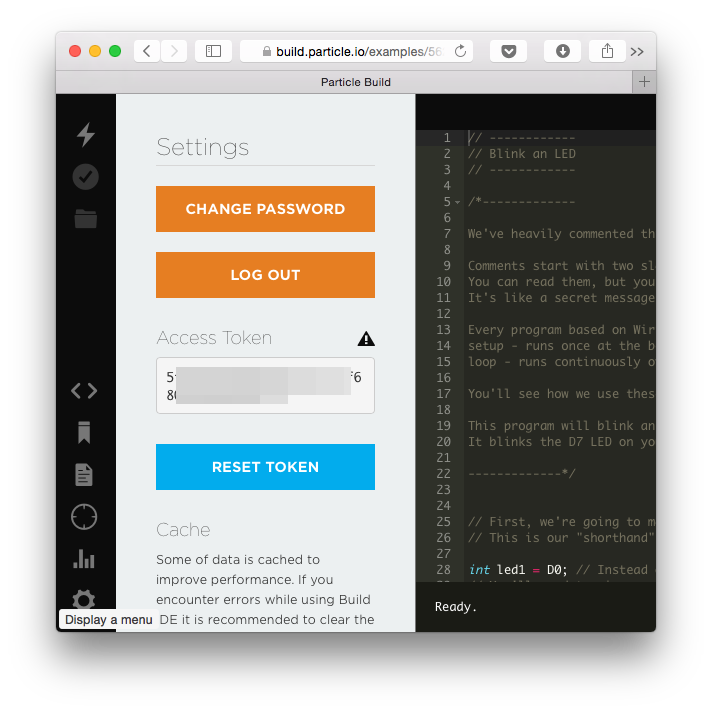
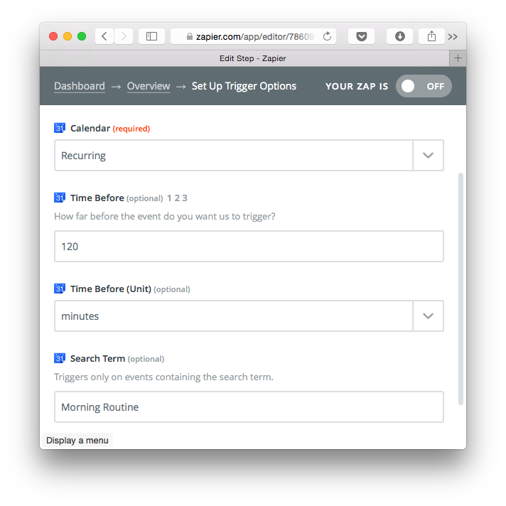
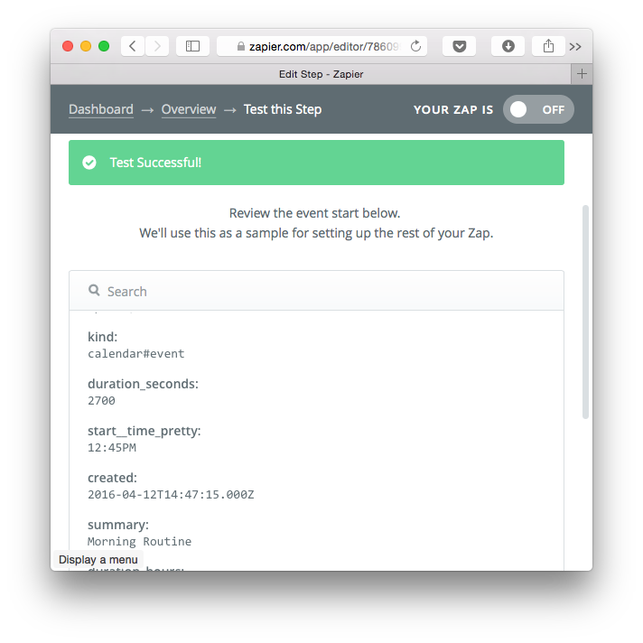
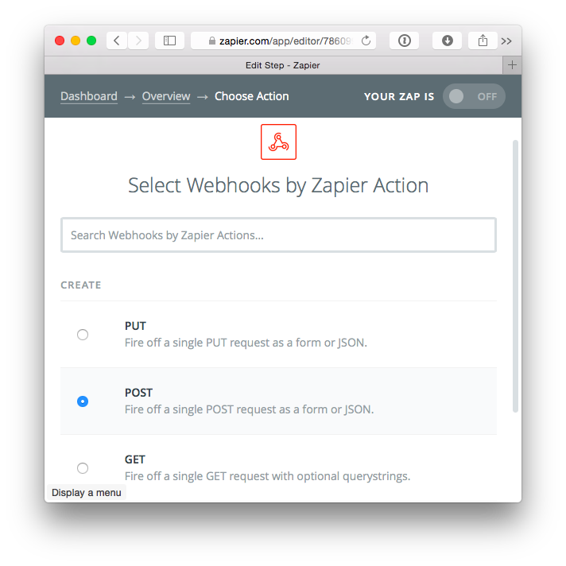
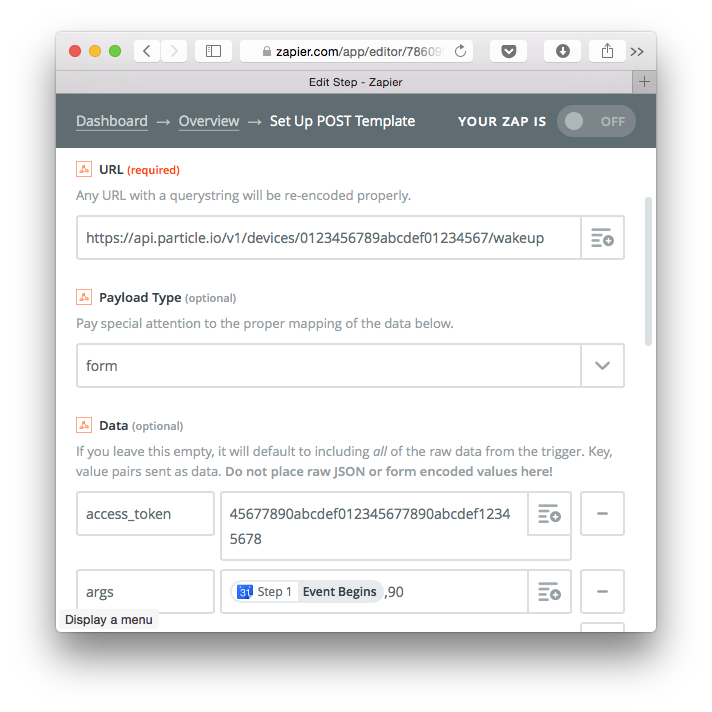
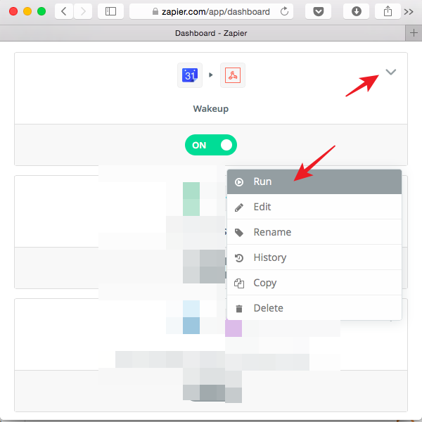

I made a simple device to help me get out of bed when I wake naturally in the morning. At a glance, the device tells me when I’m within 90 minutes - approximately one sleep cycle - of my alarm going off. If I wake up before my alarm and see the light, I know I’m better off getting up instead of waiting for my alarm to go off in mid-sleep cycle and waking up groggy. In this article is a tutorial on how to link a Google Calendar event with a Particle Photon, and an overview of Particle’s Access Tokens.
I’m using the Wakeup Light instead of a traditional alarm clock, which would need to be lit up all night for me to see it, and wouldn’t give me the clear direction to “get up” or “keep sleeping” at a glance. This isn’t a complete alarm clock replacement yet, I still use my phone as an audible backup alarm clock at night, but it’s placed out of reach, not visible, and running the Sleep Cycle app. Ideally I’d just use Sleep Cycle to wake me up between sleep cycles, but I found I didn’t trust that the alarm was going off between cycles after trying it a few times. It’s easy for me to trust that I’m between sleep cycles if my eyes are open and I’m looking at a dimly lit LED.
I have a “Morning Routine” event in my calendar that I can use as a timestamp for when I need to wake up. The overall problem seems really simple, just turn an LED off 90 minutes before the start of a calendar event, and turn it off sometime after the event starts. I figured one of the Web Automation Services like IFTTT could handle this task, and started by looking at the IFTTT Google Calendar Triggers. There’s a trigger called “Event from search starts” that fires within 15 minutes of an event starting time. The 15 minutes wasn’t flexible, and I needed a trigger at least 90 minutes before. I could work around this by creating a new event on my calendar for “Wakeup”, but that’s not ideal.
My next stop was Zapier, which I had used before, but never with a Particle device. Zapier has a more flexible “Event Start” Trigger, but no Particle integration. Someone had already figured out how to make Zapier send a message to a Particle device, and wrote up a tutorial.
With that I was ready to get started on the project. I chose an Internet Button for the hardware, as it has a ring of LEDs, enclosure, and I could use the buttons and buzzer to make a more full featured alarm clock if I find I want this in the future, but I made the code work with a plain Photon as well, using the Blue LED.
Access Tokens
Setting up the Zapier rule - they call it a “Zap” - is quite easy, but depends on having an access token for your Particle account, so let’s get that first. Particle has an overview of Access Tokens but it’s in their “How to Build a Product” guide, mixed in a with a lot of irrelevant information about “customers” and I found it confusing. I’ll cover just what is needed to make your own project.
From the Particle Guide: “An access token is a special code that is tied to a Particle [user], that allows reading data from and sending commands to that person’s device(s).” You need to give Zapier an access token so it is allowed to send a message to the wakeup light.
When you open Particle Build, you can easily see an access token in the Settings tab. This token never expires, but if you press the Reset Token button it will be removed and replaced with another number. If you use this to give apps permission to access your Particle account, and you press the button - even accidentally - you need to update all the apps to use the new Access Token. I don’t think it’s a good choice for this project.

You can manage your access tokens through the Particle API. First, let’s see what access tokens are already in your account. Run this from the command line and replace username and password with your Particle account’s username and password.
curl https://api.spark.io/v1/access_tokens -u username:password
You might be surprised at how many access tokens are in your account. I had more than 30, mostly because I often switch between Particle CLI accounts, and each new CLI login seems to generate a new access token.
We should create a new access token to use in our Zapier link. You’ll have to make a choice of convenience versus security here. By default, access tokens expire in 90 days to limit exposure from someone or a service getting access to your devices. This might be fine for an application where we’d get a notification that our credentials expired and where we could login again easily. Once I set up the Zapier rule, I want it to work with no maintenance. I’m going to set the access token to never expire (expires_in=0), so I don’t need to refresh the token. From the command line, run the following command replacing the example username and password.
curl https://api.particle.io/oauth/token -u particle:particle -d expires_in=0 -d grant_type=password -d username=joe@example.com -d password=SuperSecret
You should see a response with an access token, make sure you copy the token somewhere safe so you can remember this access token was set up for Zapier:
{
"token_type": "bearer",
"access_token": "45677890abcdef012345677890abcdef12345678",
"expires_in": 0,
"refresh_token": "012345677890abcdef012345677890abcdef1234t"
}
Zapier Setup
Zapier lets you set the “Event Start” trigger to send a message an arbitrary amount of time before the event start. We could set it to send the alarm 90 minutes before the event start. In the simplest version of the light, it could turn on when it gets the message from Zapier, and be hardcoded to turn off 90 minutes later, when my backup alarm goes off. This is pretty inflexible, I’d rather make the firmware so it gets a message containing the time the light should turn on, and the time the light should turn off so I could use the same firmware for another application. The actual event can be scheduled in advance of the light going on or off, so if there’s a delay in Zapier receiving the event, or triggering the light, there’s some cushion so the light can still turn on at the right time.
You can use the Zapier Free plan for this project. The Free plan supports 100 Tasks/month, and we should have a maximum of 31 tasks in a month if the “Morning Routine” event is in the calendar once daily. Zaps run every 15 minutes on the Free plan, so we should add some padding to the 90 minute wakeup time so the Zap can run before the light is supposed to turn on.
Setup Google Calendar Trigger
In Zapier, go to “Make a Zap”, choose Google Calendar, and the “Event Start” trigger. Connect your Google Calendar account, press the Test button to make sure it works, then “Save and Continue” to setup the trigger.
Select your calendar, the time before the event (120 minutes = 90 minutes plus some padding), and the search terms that will bring up the event, “Morning Routine”. Press “Continue”.

The next page will always say “Test Successful” as long as it can reach your calendar. We need to look more carefully at the test to make sure it’s working. Create a new event called “Morning Routine” in your Google Calendar and set it to start within the next 120 minutes. On the “Test Google Calendar” screen, press “Re-test Google Calendar”, then “Fetch and Continue”. Take a look at the event details, and make sure they match the “Morning Routine” event on the calendar. If Zapier can’t find the event in your calendar, it will still say “Test Successful”, but the event details will be a for a dummy event called “Zapier Party”. Once you’re able to load the Morning Routine event from your calendar, press Continue to set up the next part of the rule.

Setup Particle Function
For the “Action App”, there’s no Particle App, so we’ll use a generic Webhooks App instead. We’re going to do a POST to trigger a Particle Function.
You can call a function by doing a POST with arguments from the command line. You need the Device ID for your Photon, which you can get from Particle Build in the Devices tab. We’ll call the function “wakeup”, and we got an access token earlier. With all those pieces of info, you can edit this example request.
curl https://api.particle.io/v1/devices/0123456789abcdef01234567/wakeup -d arg="test message" -d access_token=1234
This simple sketch exposes the “wakeup” function, and will blink the LEDs and print out the message it receives over USB when you call the function. Program your Photon with the sketch, and when you run the curl command, your Photon should turn its LEDs on briefly, and print out wakeup: "test message" over USB. Make sure you can see your Photon receiving “test message” before continuing.
Setup Webhooks Action App
Start setting up the Action App by choosing “Webhooks by Zapier” app, and the POST Action.

We’ll fill in the same info used in the curl command here. It’s obvious where the URL goes, but the access token needs to go into a key-value pair in the Data section. The key is access_token, and the value is the token itself. Create another key-value pair with key args. Instead of “test message”, we’ll send some useful data instead. For the value, use the dropdown to select the Event Begins timestamp from the calendar event in Step 1, followed by ,90 (no spaces!) so we can tell our sketch that we want the light to go on 90 minutes before the event begins.

Press Continue and you’ll see “Test Successful”, but ignore that and press “Re-Test” to get it to actually test. You’ll see a screen with what is going to be sent to the Photon, and args should look something like this:
2016-04-12T12:45:00-04:00,90
If you press “Create & Continue”, the Photon should receive the args string and print it out over USB. At this point, you could press “Finish” and enable the Zap, but staying on the test screen is useful to help with testing firmware as we finish up the sketch.
Firmware
I thought the firmware would be quite simple, but needed to learn a lot about handling time on the Photon before I could get the functionality I wanted. Particle has a Time library but no functions for parsing a timestamp in the ISO 8601 format that Google Calendar sends for Event Start.
I found a C standard library function that converts a timestamp string to a tm structure, and another to convert a tm structure to the time_t type that Particle uses in the Time library. One detail that stumped me for a bit is that strptime() doesn’t parse time zone offsets though the documentation says it does. I had to write my own time zone conversion code. After converting, I have the timestamp for Event Start in UTC and time_t type - the same format as the Particle Time library - so it’s easy to do comparisons. The rest of the program is simple: turning on the LEDs when they’re supposed to be on, and off when they’re supposed to be off.
Test
We can test that the light is working by enabling the Zap and forcing it to run after making some fake events in Google Calendar

- Create “Morning Routine” event in Google Calendar, but outside of next 120 minutes - should see nothing happen on the light and USB messages
- Move the event between 90-120 minutes from now, run the Zap - should see timestamps over USB, but no LED on yet
- Move the event within 90 minutes, run the Zap - see LEDs turn on
- Move the event within 15 minutes, run the Zap - see LEDs turn on, then wait, LEDs should turn off within 30-45 minutes (30 minutes after event starts
Next Steps
This minimal version of the wakeup light works, but there are a few improvements I already have in mind, and I’ll probably have more after starting to use it daily.
- The timezone calculation only processes full hours, ignoring time zones with partial-hour offsets (which I was surprised to find is used in quite a few places)
- The status LED is always on, and is bright enough to be annoying in a dark room. I’m just covering it up for now, but would like to turn it off unless I want to see the status (e.g. while pressing a button)
- Running from a battery instead of requiring the device to be plugged in through USB would be a nice improvement
- Less geeky enclosure - I’m thinking about hiding the light in a candle
- Battery power to remove the power cord and declutter my nightstand
- Instead of hard-coding the delay to turn off the light, pass a parameter as part of the message
I’ll continue to write about this project as I make improvements, please subscribe to get the latest posts!
LED icon is LED by jon trillana from the Noun Project